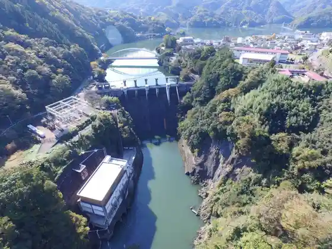
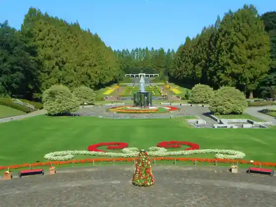
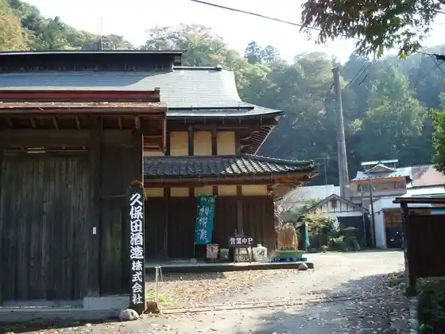

Shiroyama Dam
Sagamihara, Kanagawa · 045-210-7239 · Official / source link
Sagami Dam
Sagamihara, Kanagawa · 045-210-7239 · Official / source link

Kanagawa Prefectural Sagamihara Park
Sagamihara, Kanagawa · 042-778-1653 · Official / source link

Kubota Shuzo
Sagamihara, Kanagawa · 042-784-0045 · Official / source link

Miyagase Dam
Sagamihara, Kanagawa · 046-281-6911 · Official / source link
Toma Yama Park
Sagamihara, Kanagawa · 042-769-8243 · Official / source link
Sagamihara Asamizo Park
Sagamihara, Kanagawa · Official / source link
Hakucho Kata Yuransen (Suwan Maru)
Sagamihara, Kanagawa · 042-684-2131 · Official / source link
Sagami Mizumi MORI MORI (Kyu Sagami Mizumi Resort Purejaforesuto)
Sagamihara, Kanagawa · 0570-037-353 · Official / source link
Hirugadakeyama Itadaki
Sagamihara, Kanagawa · Official / source link
Ogura Hashi Sagamigawa Keiryu Sansaku
Sagamihara, Kanagawa · Official / source link
Sagami no Odako Center (Renge no Sato Araiso)
Sagamihara, Kanagawa · 046-255-1311 · Official / source link
Sagamigawa Fureai Science Museum Akuariumu Sagamihara
Sagamihara, Kanagawa · 042-762-2110 · Official / source link
Ozaki Gaku Do Memorial Museum
Sagamihara, Kanagawa · 042-784-0660 · Official / source link
JAXA Sagamihara Kyanpasu (Uchu Kagaku Tansa Koryu to)
Sagamihara, Kanagawa · 042-759-8008 · Official / source link
Kohara Yado Honjin
Sagamihara, Kanagawa · 042-684-4780 · Official / source link
Sagamiko Yuransen Mataha Boto Asobi
Sagamihara, Kanagawa · Official / source link
Sagamihara Ritsu Torii Hara Fureai no Kan
Sagamihara, Kanagawa · 042-785-7300 · Official / source link
Fujino Geijutsu no Ie Experience Workshop
Sagamihara, Kanagawa · 042-689-3030 · Official / source link
Sagami Mizumi Onsen Ururi (Sagamiko Onsen)
Sagamihara, Kanagawa · 042-685-2641 · Official / source link
Ki Morebi Forest
Sagamihara, Kanagawa · Official / source link
Kanuma Park
Sagamihara, Kanagawa · 042-755-9781 · Official / source link
Michi Ho Kawa Park
Sagamihara, Kanagawa · 042-776-6484 · Official / source link
Fujino Engei Land (Shukaku Experience)
Sagamihara, Kanagawa · Official / source link
Seiryu Village
Sagamihara, Kanagawa · 042-760-2711 · Official / source link
Sagamihara Ko Minka Sono
Sagamihara, Kanagawa · 042-760-1130 · Official / source link
Sagamigawa Nature no Village Park
Sagamihara, Kanagawa · 042-769-8243 · Official / source link
Joshibi Ato Museum (Joshibijutsudaigaku)
Sagamihara, Kanagawa · 042-778-6801 · Official / source link
Kawajiri Sekkijidai Iseki
Sagamihara, Kanagawa · Official / source link
Tsukui Joshi
Sagamihara, Kanagawa · 042-780-2420 · Official / source link
Katsusaka Iseki
Sagamihara, Kanagawa · 042-769-8371 · Official / source link
Historic Site Tana Mukaihara Iseki Kyusekkijidai Gakushu Kan (Kyu Sekki Hatena Kan)
Sagamihara, Kanagawa · 042-777-6371 · Official / source link
Tsukuiko Shiroyama Park
Sagamihara, Kanagawa · 042-780-2420 · Official / source link
Sandan no Taki Tembo Plaza
Sagamihara, Kanagawa · Official / source link
Sagamihara City Hall Sakura Tori
Sagamihara, Kanagawa · 042-769-8236 · Official / source link
Shiroyama Katakuri Village
Sagamihara, Kanagawa · 042-782-4246 · Official / source link
Sagamihara Ritsu Museum
Sagamihara, Kanagawa · 042-750-8030 · Official / source link
Wada no Sato Taiken Center (Mura no Ie)
Sagamihara, Kanagawa · 042-687-5151 · Official / source link
Midori no Kyuka Village Aone Campground
Sagamihara, Kanagawa · 042-787-1380 · Official / source link
Sauzanrodo Sagami Dai
Sagamihara, Kanagawa · Official / source link
Tamago Kaido (Asamizo Chikusan Kai)
Sagamihara, Kanagawa · Official / source link
Hakkei no Tana to Kashi Dankyu (Sagamigawa)
Sagamihara, Kanagawa · 042-704-9046 · Official / source link
Ishi Ro Yama
Sagamihara, Kanagawa · 042-684-2633 · Official / source link
Inu Koshiji
Sagamihara, Kanagawa · Official / source link
Ya Da One Bunki
Sagamihara, Kanagawa · Official / source link
Hinoki Hora Maru
Sagamihara, Kanagawa · 042-769-8236 · Official / source link
Niji no Bridge
Sagamihara, Kanagawa · Official / source link
Nishikado Shopping Street
Sagamihara, Kanagawa · Official / source link
Tsukuiko Kanko Center
Sagamihara, Kanagawa · 042-784-6473 · Official / source link
Fuji no Atovirejjigyararii
Sagamihara, Kanagawa · Official / source link
Sagamihara Kita Park
Sagamihara, Kanagawa · 042-779-5885 · Official / source link
Fujino Yamanami Onsen
Sagamihara, Kanagawa · 042-686-8073 · Official / source link
PICA Sagami Mizumi (Kyu Padintombea Kyanpuguraundo)
Sagamihara, Kanagawa · Official / source link
Fujino Satoyama Taiken Tour
Sagamihara, Kanagawa · 042-684-9503 · Official / source link
Massurumonsuta 2 (Sagami Mizumi MORIMORI)
Sagamihara, Kanagawa · 0570-037-353 · Official / source link
Guriintawa Sagamihara
Sagamihara, Kanagawa · 042-777-3451 · Official / source link
Yoshino Yado Fujiya
Sagamihara, Kanagawa · 042-750-8030 · Official / source link
Sagamiko Park
Sagamihara, Kanagawa · 042-684-3276 · Official / source link
Fujino Kabukikoen
Sagamihara, Kanagawa · Official / source link
Fujino Kurabu
Sagamihara, Kanagawa · 042-689-6105 · Official / source link
Toma no Watashi Ato
Sagamihara, Kanagawa · Official / source link
Toma Yama Muryo Mitsudera
Sagamihara, Kanagawa · 042-778-0284 · Official / source link
Showa Hashi
Sagamihara, Kanagawa · Official / source link
Takada Hashi
Sagamihara, Kanagawa · 042-707-7050 · Official / source link
Mitsui Bridge
Sagamihara, Kanagawa · 042-780-1415 · Official / source link
Ogi no Pan
Sagamihara, Kanagawa · 042-780-8121 · Official / source link
Kanagawa Prefectural Sagamiko Koryu Center
Sagamihara, Kanagawa · 042-682-6121 · Official / source link
Tsukuiko
Sagamihara, Kanagawa · Official / source link
Fujino Tourist Information Fuji no Ne (Antenashoppu)
Sagamihara, Kanagawa · 042-687-5581 · Official / source link
Kanagawa Prefectural Sagamiko Sotei Ba
Sagamihara, Kanagawa · 042-684-2339 · Official / source link
Sagamihara Antenashoppu sagamix (Sagamikkusu)
Sagamihara, Kanagawa · 042-687-5581 · Official / source link
Miyagase Mizumi
Sagamihara, Kanagawa · Official / source link
Torii Harazono Chi
Sagamihara, Kanagawa · 046-288-3600 · Official / source link
Toyokuni Ya
Sagamihara, Kanagawa · 046-251-0048 · Official / source link
Shimizu Shuzo
Sagamihara, Kanagawa · 042-784-0010 · Official / source link
Koza Buta Te Tsukuri Hamu Sagamihara Mise
Sagamihara, Kanagawa · 042-750-8641 · Official / source link
Kentoku Winery
Sagamihara, Kanagawa · 046-245-0808 · Official / source link
Ryori Ya Hama Cho
Sagamihara, Kanagawa · 042-784-1991 · Official / source link
Hyogi Hara
Sagamihara, Kanagawa · Official / source link
Hyo Roku Tama
Sagamihara, Kanagawa · 042-778-1572 · Official / source link
Hisashi Do
Sagamihara, Kanagawa · 042-684-9013 · Official / source link
Kokorozashi Mizu Ya
Sagamihara, Kanagawa · 042-773-3606 · Official / source link
Nosambutsu Chokubai Tokoro Beji Tabena
Sagamihara, Kanagawa · 042-851-3583 · Official / source link
Kotohira Miya
Sagamihara, Kanagawa · 042-783-8065 · Official / source link
Ryu Kago Yama Lookout
Sagamihara, Kanagawa · 042-783-8065 · Official / source link
Jin Tani Onsen (Sagamiko Eria)
Sagamihara, Kanagawa · 0426-87-2363 · Official / source link
Kadoya Shokudo
Sagamihara, Kanagawa · 042-684-2002 · Official / source link
Kanagawa Prefectural Sagamihara Park (Sakura)
Sagamihara, Kanagawa · 042-778-1653 · Official / source link
Sagami Mizumi MORI MORI (Supuratsutsusshukanibaru) 2026
Sagamihara, Kanagawa · 0570-037-353 · Official / source link
Kanagawa Prefectural Sagamihara Park Seseragi no Enchi Ku Jabujabu Zon
Sagamihara, Kanagawa · 042-778-1653 · Official / source link
Ue Oshima Campground
Sagamihara, Kanagawa · 042-760-6066 · Official / source link
Mochi Benten Campground
Sagamihara, Kanagawa · 042-760-6077 · Official / source link
Kubota Shuzo Kankojigyo Mono Muke UV
Sagamihara, Kanagawa · Official / source link
Jimba Yama
Sagamihara, Kanagawa · Official / source link